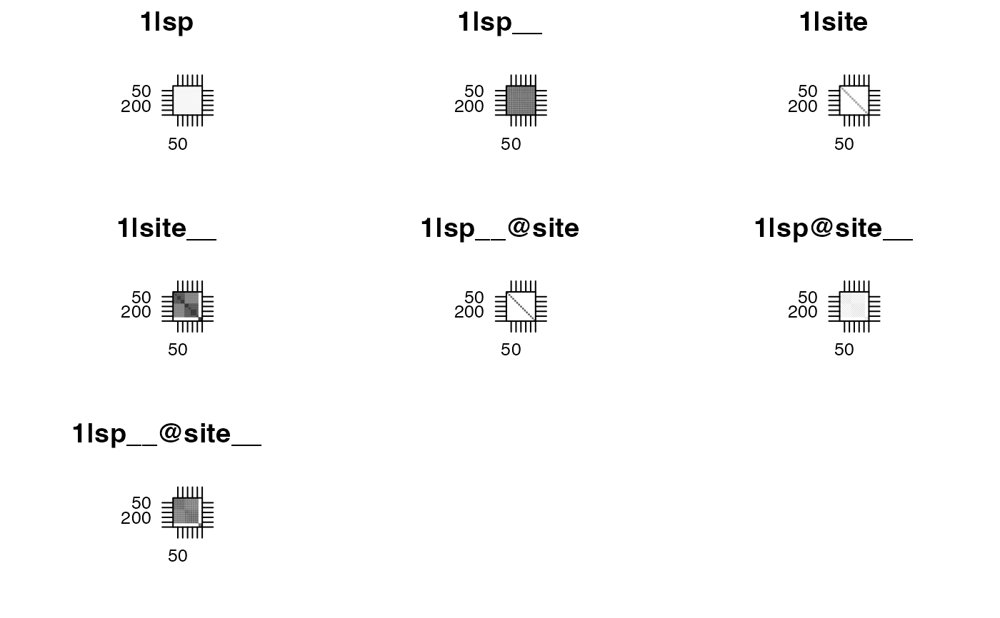
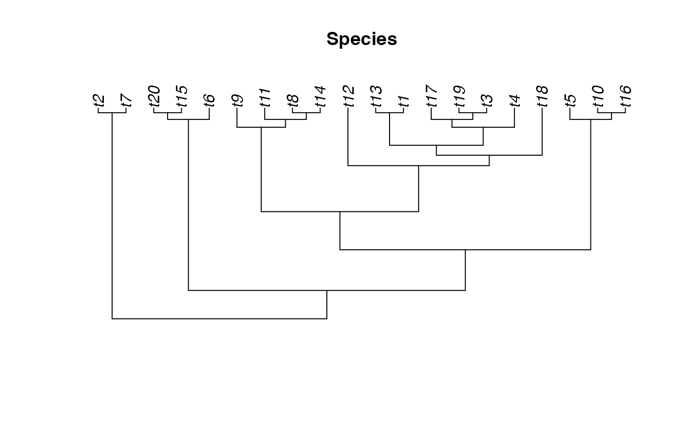
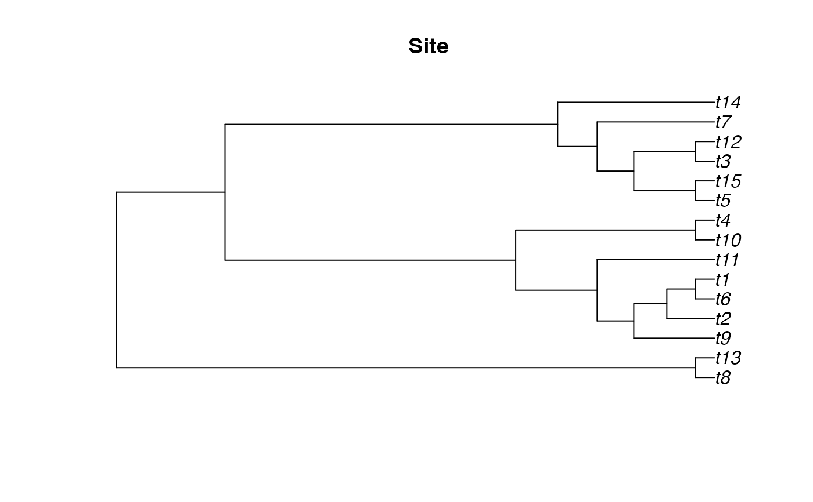

This function performs Generalized Linear Mixed Models for binary, count,
and continuous data, estimating regression coefficients with
approximate standard errors. It is specifically designed for community data
in which species occur within multiple sites (locations).
A Bayesian version of PGLMM uses the package INLA,
which is not available on CRAN yet. If you wish to use this option,
you must first install INLA from https://www.r-inla.org/ by running
install.packages('INLA', repos='https://www.math.ntnu.no/inla/R/stable') in R.
Usage
pglmm(
formula,
data = NULL,
family = "gaussian",
cov_ranef = NULL,
random.effects = NULL,
REML = TRUE,
optimizer = NULL,
repulsion = FALSE,
add.obs.re = TRUE,
verbose = FALSE,
cpp = TRUE,
bayes = FALSE,
s2.init = NULL,
B.init = NULL,
reltol = 10^-6,
maxit = 500,
tol.pql = 10^-6,
maxit.pql = 200,
marginal.summ = "mean",
calc.DIC = TRUE,
calc.WAIC = TRUE,
prior = "inla.default",
prior_alpha = 0.1,
prior_mu = 1,
ML.init = FALSE,
tree = NULL,
tree_site = NULL,
sp = NULL,
site = NULL,
bayes_options = NULL,
bayes_nested_matrix_as_list = FALSE,
posterior.sample = TRUE,
return.fitted.marginals = TRUE,
sparse = NULL,
standardize_cov = TRUE,
method = c("Laplace", "PQL"),
sparse_method = c("precision", "flow")
)
communityPGLMM(
formula,
data = NULL,
family = "gaussian",
cov_ranef = NULL,
random.effects = NULL,
REML = TRUE,
optimizer = NULL,
repulsion = FALSE,
add.obs.re = TRUE,
verbose = FALSE,
cpp = TRUE,
bayes = FALSE,
s2.init = NULL,
B.init = NULL,
reltol = 10^-6,
maxit = 500,
tol.pql = 10^-6,
maxit.pql = 200,
marginal.summ = "mean",
calc.DIC = TRUE,
calc.WAIC = TRUE,
prior = "inla.default",
prior_alpha = 0.1,
prior_mu = 1,
ML.init = FALSE,
tree = NULL,
tree_site = NULL,
sp = NULL,
site = NULL,
bayes_options = NULL,
bayes_nested_matrix_as_list = FALSE,
posterior.sample = TRUE,
return.fitted.marginals = TRUE,
sparse = NULL,
standardize_cov = TRUE,
method = c("Laplace", "PQL"),
sparse_method = c("precision", "flow")
)Arguments
- formula
A two-sided linear formula object describing the mixed effects of the model.
To specify that a random term should have phylogenetic covariance matrix along with non-phylogenetic one, add
__(two underscores) at the end of the group variable; e.g.,+ (1 | sp__)will construct two random terms, one with phylogenetic covariance matrix and another with non-phylogenetic (identity) matrix. In contrast,__in the nested terms (below) will only create a phylogenetic covariance matrix. Nested random terms have the general form(1|sp__@site__)which represents phylogenetically related species nested within correlated sites. This form can be used for bipartite questions. For example, species could be phylogenetically related pollinators and sites could be phylogenetically related plants, leading to the random effect(1|insects__@plants__). If more than one phylogeny is used, remember to add all to the argumentcov_ranef = list(insects = insect_phylo, plants = plant_phylo). Phylogenetic correlations can be dropped by removing the__underscores. Thus, the form(1|sp@site__)excludes the phylogenetic correlations among species, while the form(1|sp__@site)excludes the correlations among sites.Note that correlated random terms are not allowed. For example,
(x|g)will be the same as(0 + x|g)in thelme4::lmersyntax. However,(x1 + x2|g)won't work, so instead use(x1|g) + (x2|g), or(x1 + x2||g). As the random intercept and slope of(1|g) + (x|g)are independent, the model depends on wherexis zero: the variance among the levels ofgis that of the intercept plus \(x^2\) times that of the slope. With a 0/1 covariate (e.g. a control and a treatment), the levels then vary more in the treatment than in the control by construction. Center continuous covariates of random slopes (e.g.x - mean(x)) and code two-level factors as -1/+1 (equal variance in both groups) unless zero is a meaningful reference. Covariates of random slopes must be numeric columns ofdata.Grouping factors are columns of
data. Their interactions as inlme4, e.g.(1|sp:site), are fitted as the nested terms(1|sp@site), and(1|site/sp)as(1|site) + (1|sp@site).The formula can have offsets, e.g.
+ offset(log(effort))for counts with different sampling efforts or areas: terms of the linear predictor with a known coefficient of one. They are supported withmethod = "Laplace"(binomial, poisson and negative binomial models) andbayes = TRUE, and are included in the predicted values (predict(),fitted(),simulate(); withnewdata, the offset is calculated from it).- data
A
data.framecontaining the variables named in formula. Rows with missing values in the response, the fixed effects, the grouping variables or the covariates of random slopes are dropped before fitting; this is equivalent to removing those rows fromdatamanually before callingpglmm. As a result,pglmm(data_with_NAs)andpglmm(na.omit(data[, vars]))(withvarsthe variables of the model) produce identical estimates. Withrandom.effects, only the rows with missing values in the response are dropped.- family
Either "gaussian" for a Linear Mixed Model, or "binomial", "poisson", "nbinomial" or "Gamma" for Generalized Linear Mixed Models. "family" should be specified as a character string (i.e., quoted). For binomial and Poisson data, we use the canonical logit and log link functions, respectively. Binomial data can be either presence/absence, or a two-column array of 'successes' and 'failures'. For both binomial and Poisson data, we add an observation-level random term by default via
add.obs.re = TRUE."nbinomial" is the negative binomial distribution for overdispersed counts, with the log link and the variance \(\mu + \mu^2 / \theta\) given the random effects (as
lme4::glmer.nb(),glmmTMB(family = nbinom2)andMASS::glm.nb()). Its dispersion parameter \(\theta\) is estimated with the other parameters (elementthetaof the fitted model); \(\theta = \infty\) is the poisson distribution. As \(\theta\) accounts for overdispersion, no observation-level random term is added. Withbayes = FALSE, negative binomial models are always fitted withmethod = "Laplace", with starting values fromMASS::glm.nb()."Gamma" (or "gamma") is the Gamma distribution for positive continuous responses (e.g. biomass, body size, durations), with the log link and the variance \(\mu^2 / \nu\) given the random effects (as
glm(),lme4::glmer()andglmmTMB()withfamily = Gamma(link = "log")). Its shape parameter \(\nu\) is estimated with the other parameters (elementshapeof the fitted model;sigma()ofglmmTMBis \(1/\sqrt{\nu}\), the coefficient of variation). No observation-level random term is added. Gamma models are only available withbayes = FALSE, and are always fitted withmethod = "Laplace", with starting values fromglm()andMASS::gamma.shape().If
bayes = TRUEthere are three additional families available: "zeroinflated.binomial", "zeroinflated.poisson" and "zeroinflated.nbinomial", which add a zero inflation parameter; this parameter gives the probability that the response is a zero. The rest of the parameters of the model then reflect the "non-zero" part part of the model. Note that "zeroinflated.binomial" only makes sense for success/failure response data.- cov_ranef
A named list of covariance matrices of random terms. The names should be the group variables that are used as random terms with specified covariance matrices (without the two underscores, e.g.
list(sp = tree1, site = tree2)). The actual object can be either a phylogeny with class "phylo" or a prepared covariance matrix. If it is a phylogeny,pglmmwill prune it and then convert it to a covariance matrix assuming Brownian motion evolution.pglmmwill also standardize all covariance matrices to have determinant of one (unlessstandardize_cov = FALSE), so the estimated variances of these terms are on the scale of the standardized matrices; usescale_factorsof the fitted model to rescale them (see "Extracting the variances of random terms" in Details). Group variables will be converted to factors and all covariance matrices will be rearranged so that rows and columns are in the same order as the levels of their corresponding group variables.- random.effects
Optional pre-build list of random effects. If
NULL(the default), the functionprep_dat_pglmmwill prepare the random effects for you from the information informula,data, andcov_ranef.random.effectallows a list of pre-generated random effects terms to increase flexibility; for example, this makes it possible to construct models with both phylogenetic correlation and spatio-temporal autocorrelation. In preparingrandom.effect, make sure that the orders of rows and columns of covariance matrices in the list are the same as their corresponding group variables in the data. Also, this should be a list of lists, e.g.random.effects = list(re1 = list(matrix_a), re2 = list(1, sp = sp, covar = Vsp)).- REML
Whether REML or ML is used for model fitting the random effects. Ignored if
bayes = TRUE. For binomial and poisson models withmethod = "Laplace",REML = TRUEintegrates the fixed effects out of the likelihood with the Laplace approximation too (asglmmTMB(REML = TRUE)); useREML = FALSEfor maximum likelihood estimates, comparable withlme4::glmer()andglmmTMB().- optimizer
Optimizer to use. Options:
"lbfgs"(L-BFGS with analytic gradient; default for Gaussian, also available for binomial/Poisson),"nelder-mead-nlopt"(default for binomial/Poisson),"bobyqa","Nelder-Mead", or"subplex"."Nelder-Mead"is from the stats package; all others are from the nloptr package. Withsparse = TRUE, the default (and"lbfgs") isnlminb()with the analytic gradient of the likelihood (seesparse);"subplex","nelder-mead-nlopt","Nelder-Mead"(both the Nelder-Mead algorithm of nloptr) and"bobyqa"are derivative-free, and the optimizer is restarted from its solution until the likelihood does not improve (for gaussian models; for binomial and poisson models, each PQL iteration already starts the optimizer from the previous solution). Ignored ifbayes = TRUEormethod = "Laplace".- repulsion
When there are nested random terms specified,
repulsion = FALSEtests for phylogenetic underdispersion whilerepulsion = TRUEtests for overdispersion. This argument is a logical vector of length either 1 or >1. If its length is 1, it applies to the phylogenies of species only (the variable before@, e.g.spinsp__@siteandsp__@site__): their covariance matrices are either inverted (overdispersion) or not, while the phylogenies of sites (after@) are never inverted. This follows Ives and Helmus (2011, Appendix A), where repulsion arises from competition among closely related species. If it has more than one element, then you can select which covariance matrix in the nested terms to be inverted. Make sure to get the length right: for all the terms with@, count the number of "__" to determine the length of repulsion. For example,sp__@siteandsp@site__will each require one element ofrepulsion, whilesp__@site__will take two elements (repulsion for sp and repulsion for site). Therefore, if your nested terms are(1|sp__@site) + (1|sp@site__) + (1|sp__@site__), then you should set the repulsion to be something likec(TRUE, FALSE, TRUE, TRUE)(length of 4).- add.obs.re
Whether to add an observation-level random term for binomial or Poisson distributions. Normally it would be a good idea to add this to account for overdispersion, so
add.obs.re = TRUEby default.- verbose
If
TRUE, the model deviance and running estimates ofs2andBare plotted each iteration during optimization.- cpp
Whether to use C++ function for optim. Default is TRUE. Only used by the dense code (
sparse = FALSE, which is the default only for models that the sparse code does not support, seesparse); ignored ifbayes = TRUE,sparse = TRUEormethod = "Laplace"(and thus forfamily = "nbinomial"and"Gamma"): these models are fitted with R code, with the sparse Cholesky factorizations of the Matrix package (CHOLMOD).- bayes
Whether to fit a Bayesian version of the PGLMM using
r-inla.- s2.init
An array of initial estimates of s2 for each random effect that scales the variance. If s2.init is not provided for
family="gaussian", these are estimated usinglmassuming no phylogenetic signal. A better approach might be to runlink[lme4:lmer]{lmer}and use the output random effects fors2.init. Ifs2.initis not provided forfamily = "binomial", these are set to 0.25 (withmethod = "Laplace", 0.25 for the variances multiplied byscale_factors). Forfamily = "gaussian"andbayes = FALSE, the model is parameterized with the variances of random terms relative to the residual variance (seessin the Value section), ands2.initgives the starting values of these ratios.- B.init
Initial estimates of \(B\), a matrix containing regression coefficients in the model for the fixed effects. This matrix must have
dim(B.init) = c(p + 1, 1), wherepis the number of predictor (independent) variables; the first element ofBcorresponds to the intercept, and the remaining elements correspond in order to the predictor (independent) variables in the formula. IfB.initis not provided, these are estimated usinglmorglmassuming no phylogenetic signal. A better approach might be to runlmerand use the output fixed effects forB.init. Whenbayes = TRUE, initial values are estimated using the maximum likelihood fit unlessML.init = FALSE, in which case the defaultINLAinitial values will be used.- reltol
A control parameter dictating the relative tolerance for convergence in the optimization; see
optim. Withsparse = TRUE, the default is1e-8(for each run of the optimizer, including each PQL iteration of binomial and poisson models). Withmethod = "Laplace", the relative tolerance ofnlminb()(default1e-10);maxitis then its maximum number of iterations and evaluations.- maxit
A control parameter dictating the maximum number of iterations in the optimization; see
optim.- tol.pql
A control parameter dictating the tolerance for convergence in the PQL estimates of the mean components of the GLMM. Ignored if
family = "gaussian",bayes = TRUE, ormethod = "Laplace".- maxit.pql
A control parameter dictating the maximum number of iterations in the PQL estimates of the mean components of the GLMM. Ignored if
family = "gaussian"orbayes = TRUE.- marginal.summ
Summary statistic to use for the estimate of coefficients when doing a Bayesian PGLMM (when
bayes = TRUE). Options are: "mean", "median", or "mode", referring to different characterizations of the central tendency of the Bayesian posterior marginal distributions. Ignored ifbayes = FALSE.- calc.DIC
Should the Deviance Information Criterion be calculated and returned when doing a Bayesian PGLMM? Ignored if
bayes = FALSE.- calc.WAIC
Should the WAIC be calculated and returned when doing a Bayesian PGLMM? Ignored if
bayes = FALSE.- prior
Which type of default prior should be used by
pglmm? Only used ifbayes = TRUE. There are currently four options: "inla.default", which uses the defaultINLApriors; "pc.prior.auto", which uses a complexity penalizing prior (as described in Simpson et al. (2017)) designed to automatically choose good parameters (only available for gaussian and binomial responses); "pc.prior", which allows the user to set custom parameters on the "pc.prior" prior, using theprior_alphaandprior_muparameters (RunINLA::inla.doc("pc.prec")for details on these parameters); and "uninformative", which sets a very uninformative prior (nearly uniform) by using a very flat exponential distribution. The last option is generally not recommended but may in some cases give estimates closer to the maximum likelihood estimates. "pc.prior.auto" is only implemented forfamily = "gaussian"andfamily = "binomial"currently.- prior_alpha
Only used if
bayes = TRUEandprior = "pc.prior", in which case it sets the alpha parameter ofINLA's complexity penalizing prior for the random effects. The prior is an exponential distribution where prob(sd > mu) = alpha, where sd is the standard deviation of the random effect.- prior_mu
Only used if
bayes = TRUEandprior = "pc.prior", in which case it sets the mu parameter ofINLA's complexity penalizing prior for the random effects. The prior is an exponential distribution where prob(sd > mu) = alpha, where sd is the standard deviation of the random effect.- ML.init
Only relevant if
bayes = TRUE. Should maximum likelihood estimates be calculated and used as initial values for the Bayesian model fit? Sometimes this can be helpful, but it may not help; thus, we set the default toFALSE. Also, it does not work with the zero-inflated families.- tree
A phylogeny for column sp, with "phylo" class, or a covariance matrix for sp. Make sure to have all species in the matrix; if the matrix is not standardized, (i.e., det(tree) != 1),
pglmmwill try to standardize it for you. No longer used: keep here for compatibility.- tree_site
A second phylogeny for "site". This is required only if the site column contains species instead of sites. This can be used for bipartitie questions; tree_site can also be a covariance matrix. Make sure to have all sites in the matrix; if the matrix is not standardized (i.e., det(tree_site) != 1), pglmm` will try to standardize it for you. No longer used: keep here for compatibility.
- sp
No longer used: keep here for compatibility.
- site
No longer used: keep here for compatibility.
- bayes_options
Additional options to pass to INLA when
bayes = TRUE. A named list where the names correspond to parameters in theinlafunction. One special option isdiagonal: if an element in the list is nameddiagonal, INLA adds its value to the diagonal of every random-effects precision matrix, which can help with numerical stability when the model is ill-conditioned (trylist(diagonal = 1e-4)if you see many warnings). To use multiple CPU cores, passlist(num.threads = 4)(or however many cores are available); this is often the single most effective way to speed up INLA. Anycontrol.computeentries supplied here override the defaults set byposterior.sampleandreturn.fitted.marginals.- bayes_nested_matrix_as_list
For
bayes = TRUE, prepare the nested terms as a list of length 4 as the old way?- posterior.sample
Logical (default
TRUE). Only used whenbayes = TRUE. WhenTRUE, INLA stores the full joint posterior configuration (control.compute = list(config = TRUE)), which is required forsimulateto work. Set toFALSEto skip this storage and speed up fitting when posterior simulation is not needed.- return.fitted.marginals
Logical (default
TRUE). Only used whenbayes = TRUE. WhenTRUE, INLA computes and returns the marginal posterior distributions of all fitted values (control.compute = list(return.marginals.predictor = TRUE)), which is required forsimulatewithfull = FALSE. Set toFALSEto skip this computation and speed up fitting when simulation is not needed. If bothposterior.sampleandreturn.fitted.marginalsareFALSE, INLA runs at maximum speed butsimulate()will not work on the fitted model.- sparse
Whether to fit the model with the sparse precision matrix of the phylogeny (
TRUE) or with the dense covariance matrices (FALSE). The default,NULL, isTRUEwhenever the sparse code supports the model, i.e. with random terms in the formula (notrandom.effects), phylogenies (classphylo, not covariance matrices) incov_ranef, and, withbayes = TRUE,ML.init = FALSEandrepulsion = FALSE;FALSEotherwise (it wasFALSEbefore phyr 1.5.0). Both give the same model; the estimates can differ slightly, as the optimizers differ (for binomial and poisson models fitted by PQL, the log-likelihood also depends on the path of the iterations). WithTRUE, the model is fitted with the sparse precision matrix of the phylogeny (which includes its internal nodes) and a sparse Cholesky decomposition, instead of the dense phylogenetic covariance matrix. This gives the same likelihood, but the time and memory needed grow about linearly with the number of species, so that models with thousands of species can be fitted. Nested terms (e.g.(1 | sp__@site),(1 | sp@site__),(1 | sp__@site__),(1 | sp@site)) use the precision matrix of the Kronecker product of the two covariance matrices; their time grows about linearly with the number of species and somewhat faster than linearly with the number of sites. Withrepulsion = TRUE, the precision matrix of the phylogeny becomes its (dense) covariance matrix, which is written with the internal nodes as auxiliary variables, and a sparse \(LDL'\) decomposition of a larger (indefinite) matrix is used instead. Binomial and poisson models are fitted with the same penalized quasi-likelihood (PQL) iterations as withsparse = FALSE(same updates and convergence rules,tol.pqlandmaxit.pql); at each iteration, the working weights change only the values of the sparse matrix, and the observation-level term1|obsis folded into the weights. Only available with phylogenies (classphylo) incov_ranef. Withbayes = TRUE, the model is given to INLA with one of the sparse representations ofsparse_method; usesparse = FALSEfor the dense INLA model of earlier versions (needed forranef(),predict()withnewdataandsimulate()withre.form = NA, seesparse_method).With
bayes = FALSE, the variances (for gaussian models, relative to the residual variance; for binomial and poisson models, at each PQL iteration) are estimated withnlminb()and the analytic gradient of the likelihood, with a relative tolerancereltol = 1e-10by default. The gradient needs the entries of the inverse of the sparse matrix on its pattern (its selected inverse, from the Cholesky factor, in C++), which cost about as much as a factorization. As formethod = "Laplace", the variances are optimized multiplied by theirscale_factors, with a lower bound of zero (in practice \(10^{-12}\), reported as zero). As a phylogenetic term such as1|sp__and its non-phylogenetic partner1|spare nearly confounded, the likelihood can have a local optimum where both variances are positive, and a better one where one of them is zero; the optimization is thus also started from the two "corners" where one of these variances has their sum and the other is zero, and the best solution is kept (each corner is first tried with a few iterations, and the optimization goes on only if it is then already better). The derivative-free optimizers of earlier versions can still be used withoptimizer = "subplex","nelder-mead-nlopt"or"bobyqa"(withreltol = 1e-8by default);"lbfgs"also usesnlminb()and the gradient.ranef(condVar = TRUE)uses the selected inverse too.The sparse precision matrix exists because the trait evolves along the branches as a Markov process (the value at a node depends only on its parent). This is not limited to Brownian motion: any model that is Brownian motion on a tree with transformed branch lengths can be used by passing the transformed phylogeny in
cov_ranef, e.g. an Ornstein-Uhlenbeck (OU) model with a fixed \(\alpha\) (phylolm::transf.branch.lengths(tree, model = "OUfixedRoot", parameters = list(alpha = a))$treeorgeiger::rescale(tree, "OU", alpha = a)), Pagel's \(\lambda\), \(\kappa\), or \(\delta\), or early burst. As withsparse = FALSE, the parameters of these models (e.g. \(\alpha\)) are not estimated bypglmm(); they can be chosen by fitting the model over a grid of values and comparing the log-likelihoods, which is fast withsparse = TRUE. Withstandardize_cov = TRUE, the overall scale of the transformed tree (e.g. \(\sigma^2\) of the OU model) has no effect. The OU transformation is exact for ultrametric trees; for non-ultrametric trees, check that it matches the assumption about the root. Covariance matrices that cannot be written as a tree with non-negative branch lengths (e.g. an arbitrary similarity matrix) needsparse = FALSE.- standardize_cov
Logical (default
TRUE). Whether to standardize the covariance matrices ofcov_ranefto have a determinant of one (a phylogeny is first converted to its covariance matrix, which is divided by its largest element). IfFALSE, the matrices are used as given: a covariance matrix is used as it is, and a phylogeny givesape::vcv(tree), on the scale of its branch lengths. The variances of the random terms (s2r,s2n) are then on the scale of these matrices, so that, e.g., the variance of1|sp__with a phylogenetic correlation matrix (ape::vcv(tree, corr = TRUE)) or an ultrametric tree with a height of one is directly comparable with the variance of1|spand with software that does not standardize the matrices. The likelihood, the fixed effects and the predictions do not depend on this choice; only the scale of the variances (and ofs2.init) does. Not used whenrandom.effectsis given.- method
For binomial and poisson models with
bayes = FALSE, the approximation of the likelihood (negative binomial and Gamma models,family = "nbinomial"and"Gamma", are always fitted with"Laplace"):"Laplace"(default since phyr 1.5.0) for the Laplace approximation of the marginal likelihood, as inlme4::glmer()(withnAGQ = 1) andglmmTMB, or"PQL"for penalized quasi-likelihood (the default of earlier versions, and withrandom.effects, which the Laplace code does not support). PQL is known to underestimate the variances of random terms, and to shrink the fixed effects towards zero, for binary data and counts with small means; the Laplace approximation is much less biased, and its log-likelihood approximates the marginal likelihood of the model, so that it can be used for likelihood ratio tests (pglmm_profile_LRT()) and AIC (the log-likelihood of PQL is that of a gaussian model of the working response). Ignored for gaussian models (their likelihood is exact) and withbayes = TRUE.With
"Laplace", the model is always fitted with the precision matrices used bysparse = TRUE, whatever the value ofsparse: a phylogeny gives the sparse precision matrix of all its nodes, and a covariance matrix incov_ranefits (dense) inverse. The time to fit a model thus grows about linearly with the number of species, and nested terms andrepulsionare supported. The random terms must be given in the formula (random.effectsis not supported: models with it are fitted with PQL by default). The mode of the random effects (including the observation-level term1|obs) is found by Newton iterations. The variances of the random terms are estimated first with the fixed effects at the mode (asglmer(nAGQ = 0)); this is the final fit withREML = TRUE, where the fixed effects are integrated out (asglmmTMB(REML = TRUE)) and their covariance matrix is conditional on the variances. WithREML = FALSE, the fixed effects and the variances are then estimated jointly (asglmer(nAGQ = 1)andglmmTMB), and the covariance matrix of the fixed effects is from the inverse of the (numerical) Hessian of the log-likelihood over the fixed effects and the standard deviations of the random terms, as in these packages. The optimizer isnlminb(), on the scale of the variances multiplied by theirscale_factors(the variances of an average level, with a lower bound of zero; the default starting values are 0.25 on this scale), and of the dispersion of negative binomial and Gamma models (\(1/\theta\), 1/shape), with analytic gradients, restarted from the corners of the variances of phylogenetic terms and their partners (seesparse);optimizer,tol.pqlandmaxit.pqlare not used.ranef()gives the conditional modes of the random effects, andcondVar = TRUEtheir conditional standard deviations from the Hessian of the Laplace approximation (conditional on the estimates of the parameters).pglmm_iV()gives the inverse of the covariance matrix of the working response at the mode.Choosing between them:
"PQL"(the default of earlier versions): often faster (about 1–3 times withsparse = TRUE), supports every model ofpglmm()(includingrandom.effects), and gives the same estimates as earlier versions of phyr. But its estimates are biased for binary data: compared with"Laplace"(andglmer()/glmmTMB), the fixed effects were about 5–10% closer to zero and the variances of random terms about 10–30% smaller in our comparisons. For counts, the differences were small (variances a few percent smaller). Its log-likelihood is not that of the model, so AIC and likelihood ratio tests (including tests for phylogenetic signal withpglmm_profile_LRT()) are only rough approximations."Laplace"(default): gives the same estimates and log-likelihood aslme4::glmer()andglmmTMB(to optimizer tolerance), much less biased estimates (about unbiased fixed effects withREML = FALSE, and the least biased phylogenetic variance withREML = TRUE), and a log-likelihood that can be used for AIC and likelihood ratio tests. Still much faster thanglmmTMBfor large phylogenies (e.g. 1 s versus about 60 s for 2000 species). Use it when the variances of random terms, tests of phylogenetic signal, or model comparisons matter, especially for binary data. It is an approximation too: for binary data with few observations per species, the variances (especially the phylogenetic one) remain underestimated withREML = FALSE, as with any maximum likelihood fit;REML = TRUEreduces this bias.
- sparse_method
With
sparse = TRUEandbayes = TRUE, how the phylogenetic terms are given to INLA."precision"(default): as a latent field over all nodes of the phylogeny (tips and internal nodes, without the root), with the sparse precision matrix ofsparse = TRUE; the posterior of the internal nodes (ancestral states) comes with the fit."flow": in the phylogenetic flow representation of the phyf and fibre packages, as independent rates of evolution \(r_b\) on the branches, \(u_i = \sum_b \ell_b r_b\) for the branches \(b\) from the root to tip \(i\), with \(r_b \sim N(0, \sigma^2 / \ell_b)\) and \(\ell_b\) the (standardized) branch lengths. The trait then changes by \(\ell_b r_b\) along each branch, with variance \(\sigma^2 \ell_b\), so that the covariance matrix of the tips is the same as with"precision"(Brownian motion), and the two give the same model;"flow"gives the posterior of the rates, on the scale of the trait per unit of branch length of the phylogenies incov_ranef. For nested terms with phylogenies (e.g.(1 | sp__@site),(1 | sp__@site__)), the rates are those of the pairs of branches (or of a branch and a level), from the row-wise Kronecker product of the two flow matrices, with \(r \sim N(0, \sigma^2 / (\ell_1 \ell_2))\), which gives the covariance matrix of the Kronecker product of the two covariance matrices. Terms without phylogeny are the same with both methods. The estimates of the rates ("flow") or of the nodes of non-nested phylogenetic terms ("precision") are inbayes_sparse$latentof the fitted model. Both methods report the marginal log-likelihood of the model (logLik; with"flow", INLA's value with the matrixAcan differ from that of"precision"by about one unit);"flow"is only available withbayes = TRUEfor now.repulsion,ML.init,ranef(),predict()withnewdataandsimulate()withre.form = NA(anysimulate()for"flow") are not available yet for these models. With"flow", the rates are linked to the observations by the matrixAofcontrol.predictorof INLA (as in fibre), soinla.modelhas more fitted values than observations (the first ones are those of the observations).
Value
An object (list) of class communityPGLMM with the following elements:
- formula
the formula for fixed effects
- formula_original
the formula for both fixed effects and random effects
- call
the call of
pglmm(), used byupdate()(andanova(), to refit REML fits by maximum likelihood)- re_terms
the random terms of the formula, as a named list (one element per term, e.g.
"1|sp"and"1|sp__"for(1 | sp__)) with the covariate (lhs,"1"for intercepts), the grouping variables (group), whether each has a phylogeny or covariance matrix (phy), and whether the term is nested (nested) and, for nested terms, whether each covariance matrix is inverted (repulsion);NULLwithrandom.effects- data
the dataset
- family
gaussian,binomial,poisson,nbinomialorGammadepending on the model fit- theta
for negative binomial models, the estimate of the dispersion parameter \(\theta\) (
Infif the data are not overdispersed: the poisson model); forbayes = TRUE, its posterior summary, with the credible interval intheta.ci. It issigma()ofglmmTMB(family = nbinom2)models andgetME(, "glmer.nb.theta")oflme4::glmer.nb()models.- shape
for Gamma models, the estimate of the shape parameter \(\nu\) (the variance is \(\mu^2 / \nu\));
1 / sigma()^2ofglmmTMB()models withfamily = Gamma(link = "log").- random.effects
the list of random effects
- B
estimates of the regression coefficients
- B.se
approximate standard errors of the fixed effects regression coefficients. This is set to NULL if
bayes = TRUE.- B.ci
approximate Bayesian credible interval of the fixed effects regression coefficients. This is set to NULL if
bayes = FALSE- B.cov
approximate covariance matrix for the fixed effects regression coefficients
- B.zscore
approximate Z scores for the fixed effects regression coefficients. This is set to NULL if
bayes = TRUE- B.pvalue
approximate tests for the fixed effects regression coefficients being different from zero. This is set to NULL if
bayes = TRUE- ss
the parameters that are optimized when fitting the model, one for each random term (non-nested terms first, then nested terms). Their meaning depends on the model:
For gaussian models with
bayes = FALSE, they are the standard deviations of the random terms relative to the residual standard deviation, i.e. \(\sigma_i / \sigma_{resid}\); the residual standard deviation itself is listed last. The residual variance is profiled out of the likelihood, so only these ratios are optimized (this is the same parameterization asthetaoflme4for a term such as(1 | g)). The variances ares2r = s2resid * ss^2ands2n = s2resid * ss^2for the corresponding elements.For binomial and poisson models with
bayes = FALSE, and for all models withbayes = TRUE, they are the standard deviations \(\sigma_i\) of the random terms themselves (ss^2equalss2rands2n); for gaussian models withbayes = TRUEthe residual standard deviation is listed last.
In all cases, the covariance contribution of the ith term is \(\sigma_i^2 V_{i,\rm std}\), where \(V_{i,\rm std}\) is the det=1 standardized covariance matrix (see Details), so these are not standard deviations on the original covariance scale. For variance inference use
s2r,s2n, ors2resid(orVarCorr()); do not usess^2as a variance estimate for gaussian models.- s2r
variance parameters \(\sigma_i^2\) for non-nested random effects, relative to the det=1 standardized covariance matrices (see Details). These are the recommended output for variance inference. To obtain the effective per-observation variance on a scale comparable across all random effects (including non-phylogenetic terms), multiply by
scale_factors:s2r * scale_factors[names(s2r)].- s2n
variance parameters for nested random effects; same scale as
s2r. Uses2n * scale_factors[names(s2n)]for the comparable per-observation variance.- s2resid
for linear mixed models, the residual variance. The residual always uses an identity covariance matrix (
scale_factor = 1), sos2residis directly interpretable without any rescaling.- scale_factors
named numeric vector with one entry per random effect term. Each value is
mean(diag(V_std)), the mean diagonal of the det=1 standardized covariance matrix for that term (averaged over its levels, not over observations); withstandardize_cov = FALSE, the mean diagonal of the matrix as given. For identity-based (non-phylogenetic) terms this equals 1, meanings2ris already on an interpretable scale. For a phylogenetic term from an ultrametric tree or a correlation matrix, this equals \(1 / \det(V_{\rm orig})^{1/n}\) and is typically much larger than 1. Multiplyings2r[i] * scale_factors[i]gives the variance of the ith random effect for an average level, comparable across all terms in the model and with software that does not standardize the covariance matrices (see Details).- s2r.ci
Bayesian credible interval for random effects variances for non-nested random effects. This is set to NULL if
bayes = FALSE- s2n.ci
Bayesian credible interval for random effects variances for nested random effects. This is set to NULL if
bayes = FALSE- s2resid.ci
Bayesian credible interval for linear mixed models, the residual variance. This is set to NULL if
bayes = FALSE- logLik
the log-likelihood, restricted (
REML = TRUE) or not (REML = FALSE). For gaussian models withREML = TRUE, it is the restricted log-likelihood oflmer(),glmmTMB()andnlme::lme()(the likelihood integrated over the fixed effects); versions of phyr before 1.5.0 added \(\log|X'X|/2\) to it. For binomial and poisson models fitted withmethod = "PQL", it is an approximation from the gaussian model of the working response; withmethod = "Laplace", it is the Laplace approximation of the (restricted) marginal log-likelihood, the same as that ofglmer()andglmmTMB(). Ifbayes = TRUE, this is the marginal log-likelihood of INLA- AIC
the AIC calculated with
logLik(bayes = FALSE)- BIC
the BIC calculated with
logLik(bayes = FALSE)- method
for binomial and poisson models with
bayes = FALSE, the approximation of the likelihood,"PQL"or"Laplace"(see the argumentmethod)- DIC
for Bayesian PGLMM, this is the Deviance Information Criterion metric of model fit. This is set to NULL if
bayes = FALSE.- REML
whether or not REML is used (
TRUEorFALSE).- bayes
whether or not a Bayesian model was fit.
- standardize_cov
the value of the argument
standardize_cov.- marginal.summ
The specified summary statistic used to summarize the Bayesian marginal distributions. Only present if
bayes = TRUE- s2.init
the user-provided initial estimates of
s2- B.init
the user-provided initial estimates of
B- Y
the response (dependent) variable returned in matrix form
- size
the number of trials of each observation for binomial models (it is one for binary data, and for poisson models). This is
NULLfor gaussian models, and for models withbayes = TRUEunless the response is specified with the numbers of successes and failures.- X
the predictor (independent) variables returned in matrix form (including 1s in the first column)
- H
the residuals. For linear mixed models, this does not account for random terms, i.e. it is similar to
Y - predict(merMod, re.form = NA)for models fitted with lme4. To get residuals after accounting for both fixed and random terms, useresiduals(). For the generalized linear mixed model, these are the predicted residuals in the logit -1 space.- mu
predicted mean values for the generalized linear mixed model (i.e., similar to
fitted(merMod)). Set to NULL for linear mixed models, for which we can usefitted().- nested
matrices used to construct the nested design matrix. This is set to NULL if
bayes = TRUE- Zt
the design matrix for random effects. This is set to NULL if
bayes = TRUE- St
diagonal matrix that maps the random effects variances onto the design matrix
- convcode
the convergence code provided by
optim. This is set to NULL ifbayes = TRUE- niter
number of iterations performed by
optim. This is set to NULL ifbayes = TRUE- inla.model
Model object fit by underlying
inlafunction. Only returned ifbayes = TRUE
Details
For Gaussian data, pglmm analyzes the phylogenetic linear mixed model
$$Y = \beta_0 + \beta_1x + b_0 + b_1x$$ $$b_0 ~ Gaussian(0, \sigma_0^2I_{sp})$$ $$b_1 ~ Gaussian(0, \sigma_0^2V_{sp})$$ $$\eta ~ Gaussian(0,\sigma^2)$$
where \(\beta_0\) and \(\beta_1\) are fixed effects, and \(V_{sp}\) is a variance-covariance matrix derived from a phylogeny (typically under the assumption of Brownian motion evolution). Here, the variation in the mean (intercept) for each species is given by the random effect \(b_0\) that is assumed to be independent among species. Variation in species' responses to predictor variable \(x\) is given by a random effect \(b_0\) that is assumed to depend on the phylogenetic relatedness among species given by \(V_{sp}\); if species are closely related, their specific responses to \(x\) will be similar. This particular model would be specified as
z <- pglmm(Y ~ X + (1|sp__), data = data, family = "gaussian", cov_ranef = list(sp = phy))
Or you can prepare the random terms manually (not recommended for simple models but may be necessary for complex models):
re.1 <- list(1, sp = dat$sp, covar = diag(nspp))
re.2 <- list(dat$X, sp = dat$sp, covar = Vsp)
z <- pglmm(Y ~ X, data = data, family = "gaussian", random.effects = list(re.1, re.2))
By default (standardize_cov = TRUE), the covariance matrix \(V\) is standardized
to have determinant equal to 1 before fitting.
Specifically, for an \(n \times n\) covariance matrix \(V\), pglmm uses
\(V_{\rm std} = V / \det(V)^{1/n}\), which has \(\det(V_{\rm std}) = 1\).
This ensures that the variance parameter \(\sigma^2\) has a consistent scale regardless
of the absolute magnitude of \(V\).
Extracting the variances of random terms. Two things are easy to get wrong when the
estimated variances are reported, or compared with those of other software (e.g.
glmmTMB, MCMCglmm, brms) or with the values used to simulate data:
Use
s2r,s2nands2resid(orVarCorr()), notss^2. For gaussian models fitted withbayes = FALSE,ssholds the standard deviations of the random terms relative to the residual standard deviation (s2r = s2resid * ss^2), soss^2is not a variance; it is too large by a factor of1 / s2resid(seessin Value).The variance of a term with a covariance matrix is on the scale of the standardized matrix. The model is fitted as \(\sigma^2 V_{\rm std}\), so
s2rands2nare relative to \(V_{\rm std}\), not to the matrix (or phylogeny) given incov_ranef. Standardizing a phylogenetic correlation matrix (diagonal of 1) to a determinant of one inflates its diagonal (often several-fold, more with more species), whereas the identity matrix of a non-phylogenetic term such as1|spis unchanged. As a result, thes2rof1|spand1|sp__are not on the same scale, and thes2rof1|sp__is much smaller than the phylogenetic variance on the scale of the correlation matrix. To put a term on the scale of an average level (for a correlation matrix or an ultrametric tree, the scale of the original matrix), multiply it by the mean diagonal of the standardized matrix: $$\sigma^2_{\rm obs} = \sigma^2_{\rm std} \times \overline{\rm diag}(V_{\rm std})$$ The fitted model returns these factors asscale_factors(1 for terms without a covariance matrix and for the residual):fit$s2r * fit$scale_factors[names(fit$s2r)]andfit$s2n * fit$scale_factors[names(fit$s2n)]. Do this before comparing the variances of different terms (e.g. to calculate the proportion of the variance among species that is phylogenetic) or comparing them with other software. Alternatively, fit the model withstandardize_cov = FALSE, so that the variances are on the scale of the matrices as given (with a phylogeny, on the scale of its branch lengths).
The estimates of fixed effects, the likelihood, and the group-level estimates of
ranef() do not depend on the standardization.
Although mathematically this is not required, it is a very good idea to standardize the predictor (independent) variables to have mean 0 and variance 1. This will make the function more robust and improve the interpretation of the regression coefficients. For categorical (factor) predictor variables, you will need to construct 0-1 dummy variables, and these should not be standardized (for obvious reasons).
For binary generalized linear mixed models (family =
'binomial'), the function estimates parameters for the model of
the form, for example,
$$y = \beta_0 + \beta_1x + b_0 + b_1x$$ $$Y = logit^{-1}(y)$$ $$b_0 ~ Gaussian(0, \sigma_0^2I_{sp})$$ $$b_1 ~ Gaussian(0, \sigma_0^2V_{sp})$$
where \(\beta_0\) and \(\beta_1\) are fixed effects, and \(V_{sp}\) is a variance-covariance matrix derived from a phylogeny (typically under the assumption of Brownian motion evolution).
z <- pglmm(Y ~ X + (1|sp__), data = data, family = "binomial", cov_ranef = list(sp = phy))
As with the linear mixed model, it is a very good idea to standardize the predictor (independent) variables to have mean 0 and variance 1. This will make the function more robust and improve the interpretation of the regression coefficients.
Speed
Models with bayes = FALSE spend most of their time in linear algebra
(BLAS and LAPACK), so the BLAS library that R uses matters a lot for large
data sets. The reference BLAS that R uses by default on some systems is much
slower than optimized ones. On a Mac, R comes with a version that uses
Apple's Accelerate; R can be switched to it by running, in a terminal,
ln -sf libRblas.vecLib.dylib libRblas.dylib in the folder given by
R.home("lib"), and restarting R (see the section about BLAS in the manual
'R Installation and Administration'). pglmm() shows a message once per
session when a model with at least 1000 observations is fitted on a Mac
with the reference BLAS; use options(phyr.blas.hint = FALSE) to turn it
off. extSoftVersion()["BLAS"] shows the BLAS library that R uses.
For large models with a phylogeny (at least 2000 observations or 300 tips)
fitted with sparse = FALSE, pglmm() shows a message once per session
suggesting sparse = TRUE; use options(phyr.sparse.hint = FALSE) to turn it
off.
Phylogenetic and non-phylogenetic terms
A phylogenetic term such as (1 | sp__) fits two terms, 1|sp__, with the
phylogenetic covariance matrix, and 1|sp, independent among species; a
random slope (x | sp__) likewise fits x|sp__ and x|sp. The variation
among species is thus split between a part that follows the phylogeny
(Brownian motion) and a part specific to each species (e.g. local adaptation,
plasticity or measurement differences), and the data decide which is more
important: either variance can be estimated as zero. Fitting the
phylogenetic term alone (as with a single propto() term in glmmTMB)
assumes that all the differences among species follow the phylogeny: the
species-specific variation is then forced into the phylogenetic variance (or
the residuals), which can distort it and the standard errors of the fixed
effects. The ratio of the phylogenetic variance (multiplied by its
scale_factors) to the sum of the two is a measure of phylogenetic signal,
as Pagel's lambda (see the examples of VarCorr()).
The two terms are nearly confounded, and with few species or few rows per
species, the data may not separate them well, even when their sum is well
estimated. confint() gives profile likelihood intervals of the two
variances, which are then both wide, and pglmm_profile_LRT() tests whether
a term is needed (its p-value is halved, as a variance of zero is at the
boundary of its range). The likelihood can also have a local
optimum with both variances positive and a better one with one of them at
zero, which the default optimizer of sparse = TRUE and
method = "Laplace" checks (see sparse). The one case where the
non-phylogenetic term cannot be estimated is comparative data, with one row
per species (next section).
Comparative data
A phylogenetic term such as (1 | sp__) also adds the non-phylogenetic
term (1 | sp). With comparative data (one row per species), that term is
confounded with the residual variance (or with the observation-level term
1|obs); use pglmm_compare(), which fits the model with the
phylogenetic term only. pglmm() shows a message once per session when
each level of the grouping variable of a (non-nested) phylogenetic term has
only one row; use options(phyr.compare.hint = FALSE) to turn it off.
References
Ives, A. R. and M. R. Helmus. 2011. Generalized linear mixed models for phylogenetic analyses of community structure. Ecological Monographs 81:511-525.
Ives A. R. 2018. Mixed and phylogenetic models: a conceptual introduction to correlated data. https://leanpub.com/correlateddata.
Rafferty, N. E., and A. R. Ives. 2013. Phylogenetic trait-based analyses of ecological networks. Ecology 94:2321-2333.
Simpson, Daniel, et al. 2017. Penalising model component complexity: A principled, practical approach to constructing priors. Statistical science 32(1): 1-28.
Li, D., Ives, A. R., & Waller, D. M. 2017. Can functional traits account for phylogenetic signal in community composition? New Phytologist, 214(2), 607-618.
Examples
## Structure of examples:
# First, a (brief) description of model types, and how they are specified
# - these are *not* to be run 'as-is'; they show how models should be organised
# Second, a run-through of how to simulate, and then analyse, data
# - these *are* to be run 'as-is'; they show how to format and work with data
# \donttest{
#############################################
### Brief summary of models and their use ###
#############################################
## Model structures from Ives & Helmus (2011)
if (FALSE) {
# dat = data set for regression (note: must have a column "sp" and a column "site")
# phy = phylogeny of class "phylo"
# repulsion = to test phylogenetic repulsion or not
# Model 1 (Eq. 1)
z <- pglmm(freq ~ sp + (1 | site) + (1 | sp__@site),
data = dat, family = "binomial",
cov_ranef = list(sp = phy), REML = TRUE, verbose = TRUE, s2.init = .1
)
# Model 2 (Eq. 2)
z <- pglmm(freq ~ sp + X + (1 | site) + (X | sp__),
data = dat, family = "binomial",
cov_ranef = list(sp = phy), REML = TRUE, verbose = TRUE, s2.init = .1
)
# Model 3 (Eq. 3)
z <- pglmm(freq ~ sp * X + (1 | site) + (1 | sp__@site),
data = dat, family = "binomial",
cov_ranef = list(sp = phy), REML = TRUE, verbose = TRUE, s2.init = .1
)
## Model structure from Rafferty & Ives (2013) (Eq. 3)
# dat = data set
# phyPol = phylogeny for pollinators (pol)
# phyPlt = phylogeny for plants (plt)
z <- pglmm(
freq ~ pol * X + (1 | pol__) + (1 | plt__) + (1 | pol__@plt) +
(1 | pol@plt__) + (1 | pol__@plt__),
data = dat, family = "binomial",
cov_ranef = list(pol = phyPol, plt = phyPlt),
REML = TRUE, verbose = TRUE, s2.init = .1
)
}
#####################################################
### Detailed analysis showing covariance matrices ###
#####################################################
# This is the example from section 4.3 in Ives, A. R. (2018) Mixed
# and phylogenetic models: a conceptual introduction to correlated data.
library(ape)
# Investigating covariance matrices for different types of model structure
nspp <- 6
nsite <- 4
# Simulate a phylogeny that has a lot of phylogenetic signal (power = 1.3)
phy <- compute.brlen(rtree(n = nspp), method = "Grafen", power = 1.3)
# Simulate species means
sd.sp <- 1
mean.sp <- rTraitCont(phy, model = "BM", sigma = sd.sp^2)
# Replicate values of mean.sp over sites
Y.sp <- rep(mean.sp, times = nsite)
# Simulate site means
sd.site <- 1
mean.site <- rnorm(nsite, sd = sd.site)
# Replicate values of mean.site over sp
Y.site <- rep(mean.site, each = nspp)
# Compute a covariance matrix for phylogenetic attraction
sd.attract <- 1
Vphy <- vcv(phy)
# Standardize the phylogenetic covariance matrix to have determinant = 1.
# (For an explanation of this standardization, see subsection 4.3.1 in Ives (2018))
Vphy <- Vphy / (det(Vphy)^(1 / nspp))
# Construct the overall covariance matrix for phylogenetic attraction.
# (For an explanation of Kronecker products, see subsection 4.3.1 in the book)
V <- kronecker(diag(nrow = nsite, ncol = nsite), Vphy)
# (a draw from the multivariate normal distribution with covariance matrix
# sd.attract^2 * V, from its Cholesky decomposition)
Y.attract <- array(t(chol(sd.attract^2 * V)) %*% rnorm(nrow(V)))
# Simulate residual errors
sd.e <- 1
Y.e <- rnorm(nspp * nsite, sd = sd.e)
# Construct the dataset
d <- data.frame(
sp = rep(phy$tip.label, times = nsite),
site = rep(1:nsite, each = nspp)
)
# Simulate abundance data
d$Y <- Y.sp + Y.site + Y.attract + Y.e
# Analyze the model
pglmm(Y ~ 1 + (1 | sp__) + (1 | site) + (1 | sp__@site), data = d, cov_ranef = list(sp = phy))
#> Linear mixed model fit by restricted maximum likelihood
#>
#> Formula: Y ~ 1 + (1 | sp__) + (1 | site) + (1 | sp__@site)
#>
#> logLik AIC BIC
#> -47.12 106.25 113.31
#>
#> Random effects:
#> Variance Std.Dev
#> 1|sp 0.1487 0.3856
#> 1|sp__ 0.0000 0.0000
#> 1|site 0.0000 0.0000
#> 1|sp__@site 1.7499 1.3228
#> residual 0.8657 0.9305
#>
#> Fixed effects:
#> Value Std.Error Zscore Pvalue
#> (Intercept) -0.17353 0.63569 -0.273 0.7849
#>
# Display random effects: the function `pglmm_plot_ranef()` does what
# the name implies. You can set `show.image = TRUE` and `show.sim.image = TRUE`
# to see the matrices and simulations.
re <- pglmm_plot_ranef(Y ~ 1 + (1 | sp__) + (1 | site) + (1 | sp__@site),
data = d,
cov_ranef = list(sp = phy), show.image = FALSE,
show.sim.image = FALSE
)
#################################################
### Example of a bipartite phylogenetic model ###
#################################################
# Investigating covariance matrices for different types of model structure
nspp <- 20
nsite <- 15
# Simulate a phylogeny that has a lot of phylogenetic signal (power = 1.3)
phy.sp <- compute.brlen(rtree(n = nspp), method = "Grafen", power = 1.3)
phy.site <- compute.brlen(rtree(n = nsite), method = "Grafen", power = 1.3)
# Simulate species means
mean.sp <- rTraitCont(phy.sp, model = "BM", sigma = 1)
# Replicate values of mean.sp over sites
Y.sp <- rep(mean.sp, times = nsite)
# Simulate site means
mean.site <- rTraitCont(phy.site, model = "BM", sigma = 1)
# Replicate values of mean.site over sp
Y.site <- rep(mean.site, each = nspp)
# Generate covariance matrix for phylogenetic attraction among species
sd.sp.attract <- 1
Vphy.sp <- vcv(phy.sp)
Vphy.sp <- Vphy.sp / (det(Vphy.sp)^(1 / nspp))
V.sp <- kronecker(diag(nrow = nsite, ncol = nsite), Vphy.sp)
Y.sp.attract <- array(t(chol(sd.sp.attract^2 * V.sp)) %*% rnorm(nrow(V.sp)))
# Generate covariance matrix for phylogenetic attraction among sites
sd.site.attract <- 1
Vphy.site <- vcv(phy.site)
Vphy.site <- Vphy.site/(det(Vphy.site)^(1/nsite))
V.site <- kronecker(Vphy.site, diag(nrow = nspp, ncol = nspp))
Y.site.attract <- array(t(chol(sd.site.attract^2 * V.site)) %*% rnorm(nrow(V.site)))
# Generate covariance matrix for phylogenetic attraction of species:site interaction
sd.sp.site.attract <- 1
V.sp.site <- kronecker(Vphy.site, Vphy.sp)
Y.sp.site.attract <- array(t(chol(sd.sp.site.attract^2 * V.sp.site)) %*% rnorm(nrow(V.sp.site)))
# Simulate residual error
sd.e <- 0.5
Y.e <- rnorm(nspp*nsite, sd = sd.e)
# Construct the dataset
d <- data.frame(sp = rep(phy.sp$tip.label, times = nsite),
site = rep(phy.site$tip.label, each = nspp))
# Simulate abundance data
d$Y <- Y.sp + Y.site + Y.sp.attract + Y.site.attract + Y.sp.site.attract + Y.e
# Plot random effects covariance matrices and then add phylogenies
# Note that, if show.image and show.sim are not specified, pglmm_plot_ranef() shows
# the covariance matrices if nspp * nsite < 200 and shows simulations
# if nspp * nsite > 100
re <- pglmm_plot_ranef(Y ~ 1 + (1|sp__) + (1|site__) + (1|sp__@site) +
(1|sp@site__) + (1|sp__@site__),
data=d, cov_ranef = list(sp = phy.sp, site = phy.site))

# This flips the phylogeny to match to covariance matrices
rot.phy.site <- phy.site
for(i in (nsite+1):(nsite+Nnode(phy.site)))
rot.phy.site <- rotate(rot.phy.site, node = i)
plot(phy.sp, main = "Species", direction = "upward")

plot(rot.phy.site, main = "Site")

# Analyze the simulated data and compute a P-value for the (1|sp__@site__)
# random effect using a LRT. It is often better to fit the reduced model before
# the full model, because it s numerically easier to fit the reduced model,
# and then the parameter estimates from the reduced model can be given to the
# full model. In this case, I have used the estimates of the random effects
# from the reduce model, mod.r$ss, as the initial estimates for the same
# parameters in the full model in the statement s2.init=c(mod.r$ss, 0.01)^2.
# The final 0.01 is for the last random effect in the full model, (1|sp__@site__).
# Note also that the output of the random effects from communityPGLMM(), mod.r$ss,
# are the standard deviations, so they have to be squared for use as initial
# values of variances in mod.f.
mod.r <- pglmm(Y ~ 1 + (1|sp__) + (1|site__) + (1|sp__@site) + (1|sp@site__),
data = d, cov_ranef = list(sp = phy.sp, site = phy.site))
mod.f <- pglmm(Y ~ 1 + (1|sp__) + (1|site__) + (1|sp__@site) + (1|sp@site__) +
(1|sp__@site__), data = d,
cov_ranef = list(sp = phy.sp, site = phy.site),
s2.init = c(mod.r$ss, 0.01)^2)
mod.f
#> Linear mixed model fit by restricted maximum likelihood
#>
#> Formula: Y ~ 1 + (1 | sp__) + (1 | site__) + (1 | sp__@site) + (1 | sp@site__) + (1 | sp__@site__)
#>
#> logLik AIC BIC
#> -724.6 1467.3 1500.6
#>
#> Random effects:
#> Variance Std.Dev
#> 1|sp 0.000e+00 0.000e+00
#> 1|sp__ 2.201e+00 1.484e+00
#> 1|site 0.000e+00 0.000e+00
#> 1|site__ 1.921e+00 1.386e+00
#> 1|sp__@site 2.168e+00 1.473e+00
#> 1|sp@site__ 1.734e+00 1.317e+00
#> 1|sp__@site__ 2.654e-13 5.152e-07
#> residual 4.810e-07 6.936e-04
#>
#> Fixed effects:
#> Value Std.Error Zscore Pvalue
#> (Intercept) 0.045614 2.722048 0.0168 0.9866
#>
pvalue <- pchisq(2*(mod.f$logLik - mod.r$logLik), df = 1, lower.tail = FALSE)
pvalue
#> [1] 0.9909494
# }